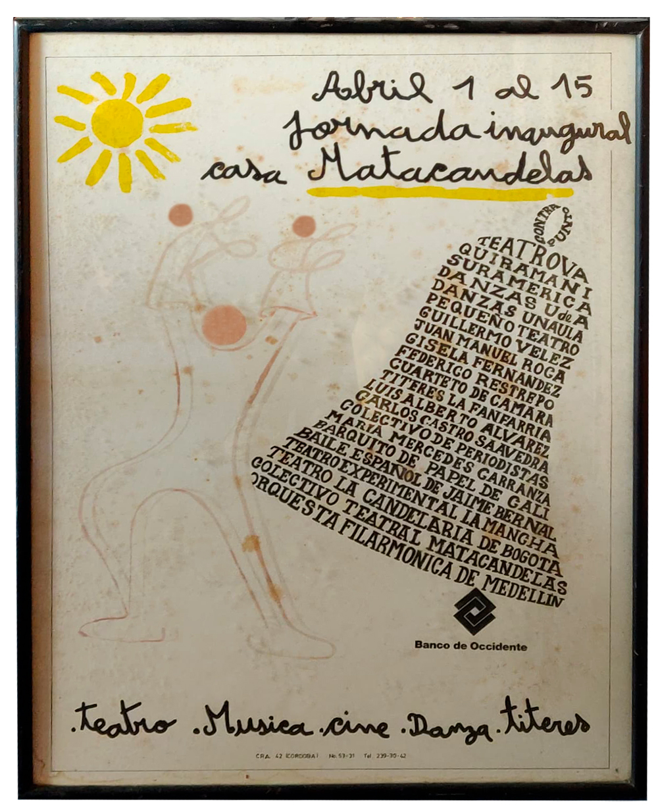
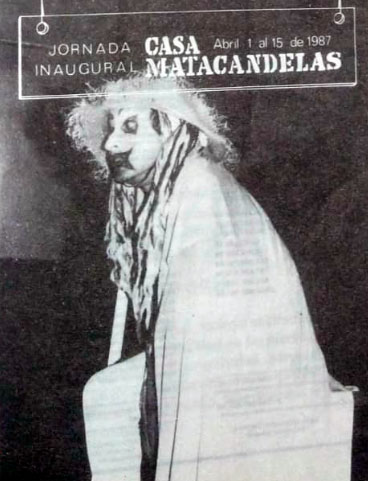
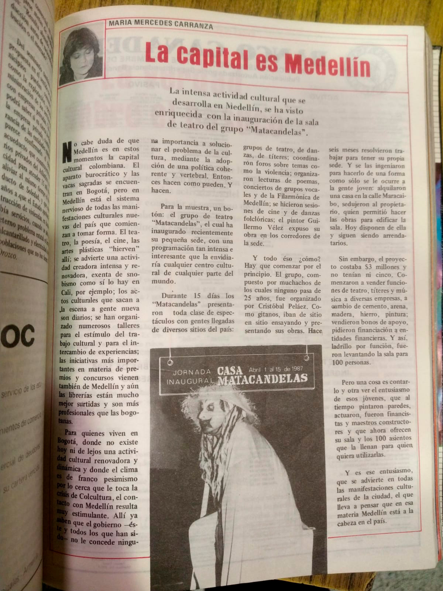

La capital es Medellín
Por Maria Mercedes Carranza
Publicado el 4 de mayo de 1987
Nota de contextualización
Tras siete años de febril actividad escénica, desde La Casa de la Cultura de Envigado, que nos sirvieron para cimentar las bases estéticas y espirituales de nuestro colectivo, agarramos nuestros bártulos y nos fuimos para el centro de Medellín. Aquí, ahí a un ladito de Bellas Artes, tomamos en arriendo una casita de dos plantas que nos ofrecía la posibilidad de levantar en su solar, con el visto bueno de los propietarios, una pequeña sala para 100 espectadores. Muros y techos se construyeron cambiando funciones teatrales por ladrillos, cemento y madera y en abril de 1987 entre el 1 y el 15 realizamos una jornada inaugural que reunió artistas locales y nacionales.

Cómo lo hicimos no lo sabemos. No obstante nosotros más pobres que los ratones pero discípulos de Oscar Wilde nos dimos el lujo de un dandismo cultural. Los artistas tuvieron que ver en esa gesta, ninguno cobró su intervención y hubo quienes realizaron un donativo en dinero. María Mercedes Carranza sin saber quiénes éramos se entusiasmó con nuestro cuento y decidió animosa trasladarse desde Bogotá a acompañarnos. Fue, vaya si la recordamos, una noche espléndida. De ella hicimos la versión musical de su maravilloso poema De Boyacá en los campos que escuchó sonrientemente conmovida.
Más tarde nos sorprendió publicando el presente escrito que se nos había embolatado y que ahora la gentileza de Alejandra Montes, como parte de su investigación sobre la autora, nos lo rescata.
Vean pues cómo fue la cosa:
La intensa actividad cultural que se desarrolla en Medellín, se ha visto enriquecida con la inauguración de la sala de teatro del grupo “Matacandelas”.
No cabe duda de que Medellín es en estos momentos la capital cultural colombiana. El aparato burocrático y las vacas sagradas se encuentran en Bogotá, pero en Medellín está el sistema nervioso de todas las manifestaciones culturales nuevas del país que comienzan a tomar forma. El teatro, la poesía, el cine, las artes plásticas "hierven" allí; se advierte una actividad creadora intensa y renovadora, exenta de snobismo como sí lo hay en Cali, por ejemplo; los actos culturales que sacan a la escena a gente nueva son diarios; se han organizado numerosos talleres para el estímulo del trabajo cultural y para el intercambio de experiencias; las iniciativas más importantes en materia de premios y concursos vienen también de Medellín y aún las librerías están mucho mejor surtidas y son más profesionales que las bogotanas.
Para quienes viven en Bogotá, donde no existe hoy ni de lejos una actividad cultural renovadora y dinámica y donde el clima es de franco pesimismo por lo cerca que le toca la crisis de Colcultura, el contacto con Medellín resulta muy estimulante. Allí ya saben que el gobierno -éste y todos los que han sido- no le concede ninguna importancia a solucionar el problema de la cultura, mediante la adopción de una política coherente y vertebral. Entonces hacen como pueden. Y hacen.

Para la muestra, un botón: el grupo de teatro "Matacandelas", el cual ha inaugurado recientemente su pequeña sede, con una programación tan intensa e interesante que la envidiaría cualquier centro cultural de cualquier parte del mundo.
Durante 15 días los "Matacandelas" presentaron toda clase de espectáculos con gentes llegadas de diversos sitios del país: grupos de teatro, de danzas, de títeres; coordinaron foros sobre temas como la violencia; organizaron lecturas de poemas, conciertos de grupos vocales y de la Filarmónica de Medellín; se hicieron sesiones de cine y de danzas folclóricas; el pintor Guillermo Vélez expuso su obra en los corredores de la sede.
Y todo eso ¿cómo? Hay que comenzar por el principio. El grupo, compuesto por muchachos de los cuales ninguno pasa de 25 años, fue organizado por Cristóbal Peláez. Como gitanos, iban de sitio en sitio ensayando y presentando sus obras. Hace seis meses resolvieron trabajar para tener su propia sede. Y se las ingeniaron para hacerlo de una forma como sólo se le ocurre a la gente joven: alquilaron una casa en la calle Maracaibo, sedujeron al propietario, quien permitió hacer las obras para edificar la sala. Hoy día disponen de ella y siguen siendo arrendatarios.
Sin embargo, el proyecto costaba $3 millones y no tenían ni cinco. Comenzaron a vender funciones de teatro, títeres y música a diversas empresas, a cambio de cemento, arena, madera, hierro, pintura; vendieron bonos de apoyo, pidieron financiación a entidades financieras. Y así, ladrillo por función, fueron levantando la sala para 100 personas.
Pero una cosa es contarlo y otra ver el entusiasmo de esos jóvenes, que al tiempo pintaron paredes, actuaron, fueron financistas y maestros constructores y que ahora ofrecen su sala y los 100 asientos que la llenan para quien quiera utilizarlas.
Y es ese entusiasmo, que se advierte en todas las manifestaciones culturales de la ciudad, el que lleva a pensar que en esa materia Medellín está a la cabeza en el país.
